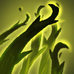
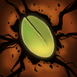
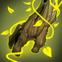
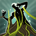
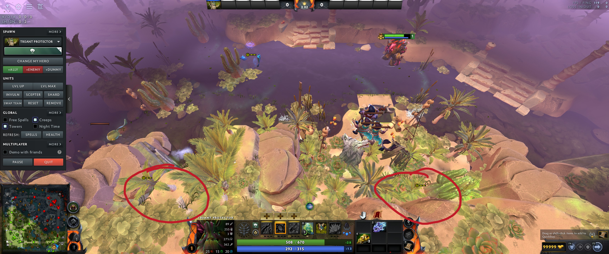
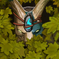
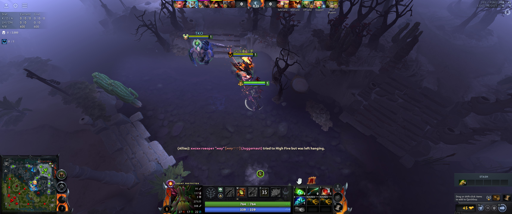
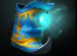
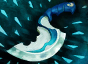
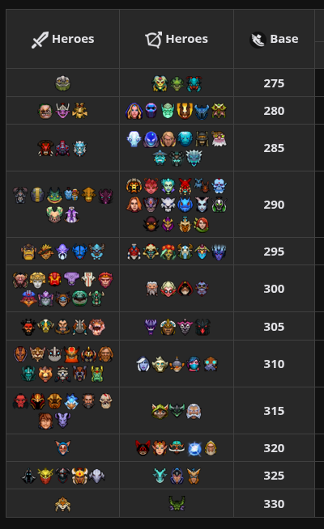

Skills

Q - Nature’s graspDuring laning, the one value point is used to finish kills or let your core run away from kill attempts. More than that cannot be sustained earlier and you are spending already mana to spam living armor.
Later Waveclear safely from Invisibility where your teammates cannot go. This is why it is maxed second.
Nature’s grasp is also perfectly sized for taking double camps around the map if you really need to farm that blink or get to level 6.
Counts as trees
Nature’s grasp can be used to extend your nature’s guide passive even if opponent is going away from the treeline.
For example, you might want to push a wave, but the creeps are positioned awkwardly. You can then walk to the middle of the lane, and as long as the passive doesn’t expire before the vines are in place you don’t lose the invisibility.

W - Leech seedExtremely good value point, as it is free and allows you to get an extra autoattack afterwards. As a support, it is not worthwhile to max, as after laning ends you have hard time utilizing it.
As a support you can put it on autocast immediately, as you are less concerned “wasting” it on creeps as you would as a core.

E - Living armorAwesome skill that you’ll be maxing first and putting on your Pos1 & Pos2. Note that the healing is great for the manacost, but the biggest value is the damage block. If you can put this on any hero as they are being focused at any point of the game, you’ll be getting insane value out of the mana cost.
Usually, Pos5 cannot venture to far objectives without Pos1 losing his cool, however Treant can keep him topped up with living armor and mitigate the tilt.
After laning, this skill shouldn’t really be of CD, as long as there are towers that can be healed. Instruct team to defend towers, as even at 1% they can be healed quite quickly.
Building healing in perspective
With level 10 talent you can heal a T1 tower 19,44% per single cast, which is insane. 75s from 1% to full.

R - OvergrowthAoE BKB piercing Bind (not Root) that issues a stop command. During midgame, you need to identify prime target and save ult to that scenario to obtain best value.
- Big value channels (Blackhole, Nightmare)
- Particularly if the enemy has BKB
- Opponent core that needs to be counter initiated on (AM that jumps your ranged core)
- If they have manta or similar dispel you MUST wait until they have popped it.
- In this scenario you can use leech seed to root the enemy and if they panic manta you follow up with Overgrowth
- If they have manta or similar dispel you MUST wait until they have popped it.
- When it is of CD you should go play with team always and look for counter initiation
If opponent thinks they are hot shit with their manta, you can Pumpfake the ult to bait them to use manta early.
Even if you have blink, you don’t need to jump next to the opponent, but it is enough to clip the guys with the edges. Use ALT+Rightclick to show radius. Afterwards change that to blink as that is more of a limiter
D -Eyes in the forest
Bonus wards for easily winning the vision game. The biggest difference is that eyes give flying vision and therefore do not need to have line of sight anywhere, this allow you to place them in spots where regular wards would not do anything, and regular dewarding wouldn’t be done.
Most practical example is the ancients in the outer rivers to which you can set vision anywhere on the nearby trees. Regular vision is most often set between the camps and that’s where the dewarding happens. In the end you want to know if enemy core is clearing the camp and their movement is secondary nice to have info.

As a thought exercise you can think:
- What vision do I want to set up and where would I place a ward
- Where would I put sentry to deward vision here
- Where would be eyes in the forest accomplish #1, while being in unlikely spot to be warded
Best vision
Eyes in the forest can even see into the Roshan’s pit!

F - Nature’s GuiseOnly able to be activated if you have the Treewalking active. Best use is for scenarios where you want to disappear from the map and surprise enemies. Portal to another lane, for example (It is possible to path via the portals without breaking passive, but it’s tough to accomplish)
In your head, try to draw a small circle around all trees, and imagine the rest of the map is lava that you want to avoid.
Fun ways to use:
- Capture the wisdom shrine while invisible, which can lead to silly situations if opponents don’t have way to break the tree or get vision
- Stay invisible almost standing on the power rune when it is being contested

Talents and skills
Skip leech seed and base damage talents, as you’re not making the most of them. Instead everything boosting the living armor is great
Talent build
| 25 | +450 |
|---|---|
| 20 | +20 |
| 15 | +25 |
| 10 | +4 |
Skill build
Most regular skill build. You can vary the first level 3 how you see fit.
| 1 | 2 | 3 | 4 | 5 | 6 | 7 | 8 | 9 | 10 | 11 |
|---|---|---|---|---|---|---|---|---|---|---|
| R |
Items
Starting items
Brown boots
See “playstyle” -segment for reasoning behind brown boots.
Blood grenade
Buy every game
Wand
Eventually mandatory in every game for the stats and utility + it builds into Holy Locket, which is good upgrade, but not a high priority.

Mana bootsThe only real option for support treant. Note that movement speed allows you to cover bigger gaps between trees without breaking nature’s guide.
Shard
Mandatory, as it grants you the eyes of the fore. The only question is, how much do you trust your team to take Tormentor? If uncertain you should buy this right after 15 minutes.

Blink DaggerExpensive, but insanely good for your positioning and overgrowth usage. It is possible you need to actually buy support items before blink, but depends if your team needs support items desperately. Once obtained use the ALT+Rightclick on blink to draw the blink distance.
Support items
Not really treant specific, so links to general situations under the links
Playstyle
Earlygame
Movement speed and autoattacks
Brown boots at the start, which increase your movement speed from 280 (308) to 325 (357,5). Numbers in brackets are the values in the trees.
When chasing an enemy, every time you attack you spend 0,6s in the attack animation roughly translating to giving running opponent a (357,5 x 0,6) 214,5 distance. Average hero movement is roughly 300 (see chart below). Formula for chasing and enemy would be: `214,5 / (357,5 - 300) = 3,73
Few alternative scenarios:
Crystal Maiden
214,5 / (357,5 - 280) = 2,76 [[Marci]] 214,5 / (357,5 - 315) = 5,04
This means you can attack the average enemy roughly every fourth second.
Advantages:
- Opponent is caught in the nature’s grasp
- Opponent need to path sideways to avoid nature’s grasp
- Opponent needs to path around trees (you don’t)
Disadvantages:
- You need to leave the treeline
Chart of heroes base movement speed values:

Windlace
Windlace stacks with the boots, and if you feel you can bully in the lane, the 225g for 15 (16,5) movement speed might very well be worth the investment.
Laning itself
Use Treewalking to get close to enemy Pos3 and if not possible then Pos4. Typically you hit them twice and then disappear into the trees.
If there is a credible kill potential, you should weave the attacks so that you do the following
- Autoattack + Leech seed
- Nature’s grasp
- Second autoattack
- Bloodgrenade and followup autoattacks Reason for the Spellweaving is that your attack backswing is very long, and you should use the time for nature’s grasp animation to be completed to waste minimal time.
Killthreat peak
Assuming your lane can even have killthreat it is from your end reached once you have both Q and W, but will not increase as you’ll be maxing the living armor.
Objectives
03:00 Contest the lotus, as Treant is very fine manfighting the other support 06:00 Contest the mid rune, 07:00 From mid walk to the opponents wisdom rune
Midgame
Your function is to provide information to your teammates in the form of eyes in the forest and you being around the map in nature’s guise. When ult is of CD, go join team and use it to Counterinitiate.
Shard
Can you get team to do Tormentor at 20min? If not save money right after manaboots to buy shard at 15min mark.
When ult is on CD go push a creepwave if possible with nature’s grasp in order to get your Blink Dagger
Lategame
Your primary concern is landing a good overgrowth. See spell description for how to use it optimally.
Nature's grasp +25dmg
Obtained at level 15, you should have the Nature’s grasp maxed out and with this talent you can kill and entire creepwave and push super well
Synergies and advantages
- You have advantage with ranged Pos1 that hate being jumped as you are able to easily counter initiate and turn the tide.
- Enemy carries that build a BKB are optimal, as the overgrowth can easily waste the BKB to a great extent.
- Enemies who jump in and do their damage in few instances struggle against a well placed living armor
Counters
- All damage over time effects are terrible for treant, as they are punishing you immediately if you break your Treewalking. Venomancer and Jakiro are matchups that feel frustrating to play against.
- Overabundance of dispel is bad as overgrowth is dispellable.
- Enemies which have ability to easily deward can actually contest your vision (Zeus, Slark)
- Tower pushers that do not leave them halfway for you to heal (Zoo heroes, Death Prophet)